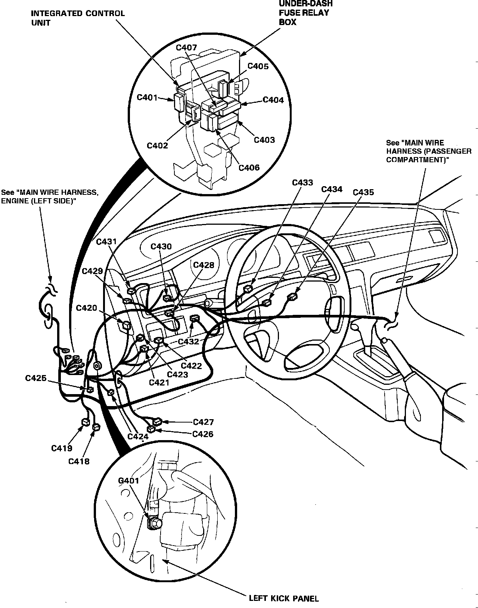
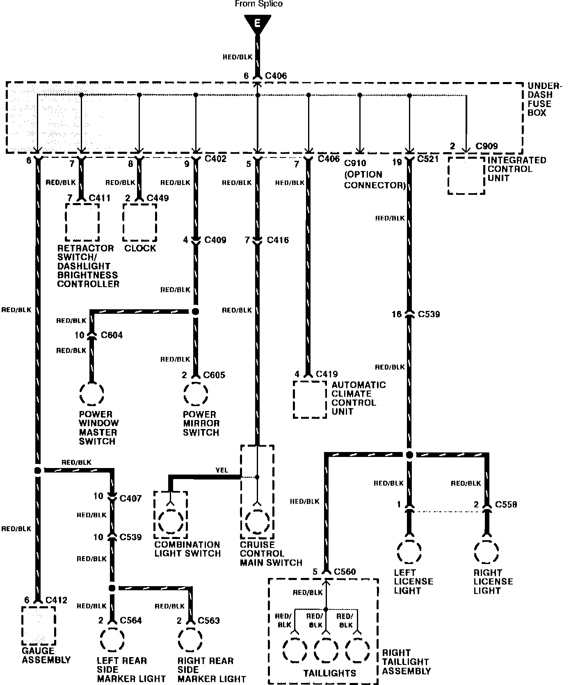
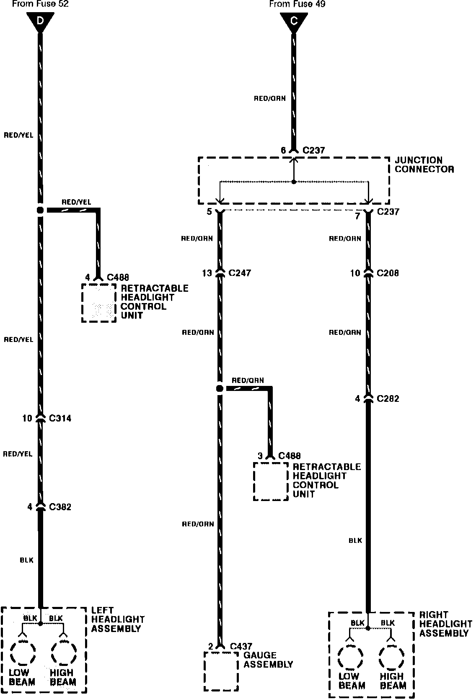

Operation CHARM
: Car repair manuals for everyone.
Home
>>
Acura
>>
1992
>>
Vigor L5-2451cc 2.5L SOHC G25A4 FI
>>
Repair and Diagnosis
>>
Locations
>>
Connector Locations
>>
C401 Thru C473
C401 Thru C473
Main: Driver's Compartment:

Headlight Switch:

Headlight Switch:
